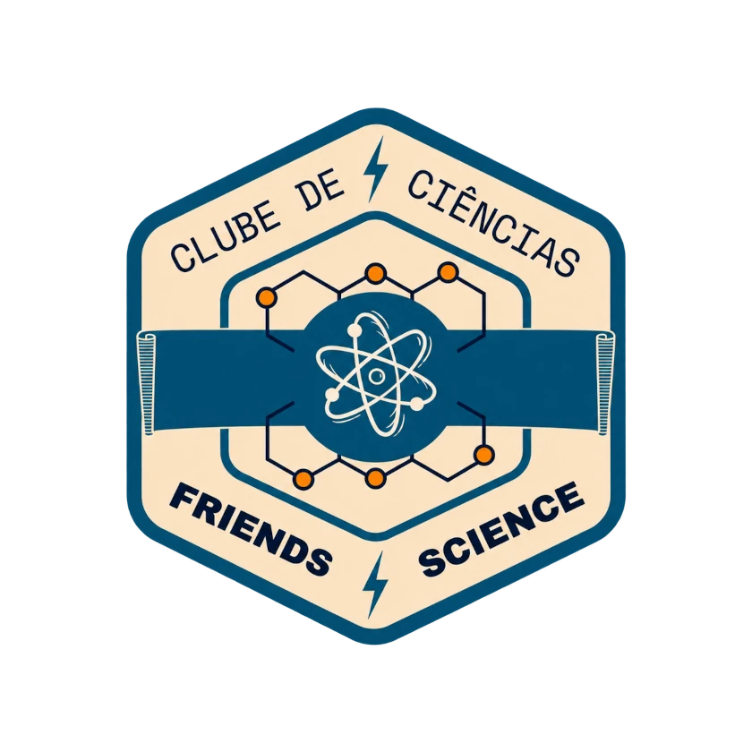

CLUBE FRIENDS OF SCIENCE
De âmbito estadual, pelo Programa Paraná Faz Ciência, o clube reúne estudantes do ensino fundamental, meninos e meninas, para investigar projetos com foco em energia e Física.

Professora Gabriele
Proposta do clube
No clube, os estudantes observam problemas, levantam hipóteses e testam ideias para entender melhor o que estão investigando.
O trabalho inclui pesquisa, experimentos, registro e conversa sobre os resultados, sempre com participação do grupo.

CLUBE FRIENDS OF SCIENCE
De âmbito estadual, pelo Programa Paraná Faz Ciência, o clube reúne estudantes do ensino fundamental, meninos e meninas, para investigar projetos com foco em energia e Física.
Projetos e registros
Fotografias agrupadas por projeto e atividade. Abra uma imagem para ampliar e percorrer somente os registros do mesmo grupo.

Construção de um protótipo para investigar a transformação da luz solar em movimento.

Reaproveitamento de óleo de cozinha em uma alternativa de menor impacto ambiental.

Pesquisa sobre a reutilização do resíduo de giz para criar novos materiais de escrita.

Investigação interdisciplinar que combina robótica, eletrônica e tecido vivo como sensor.
Percurso de trabalho
Os projetos investigam energia a partir de perguntas, testes e experimentos de Física, com registro e apresentação do que foi aprendido.
Participação
Fale com a professora responsável ou com a equipe pedagógica.
O clube se reúne às sextas-feiras, das 10h30 às 12h30, no período da manhã.
Acompanhe as etapas de pesquisa, experimentação, registro e apresentação dos projetos de Física.
Instagram do clube
Veja experiências, protótipos e descobertas dos estudantes.
Siga Friends of Science no InstagramConheça o outro clube
Conheça o clube de ciências orientado pela professora Marlene.
Conhecer Little Scientists